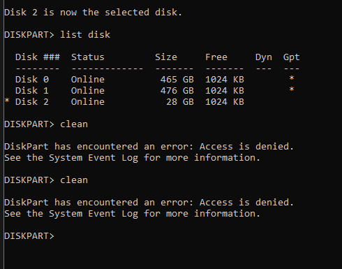
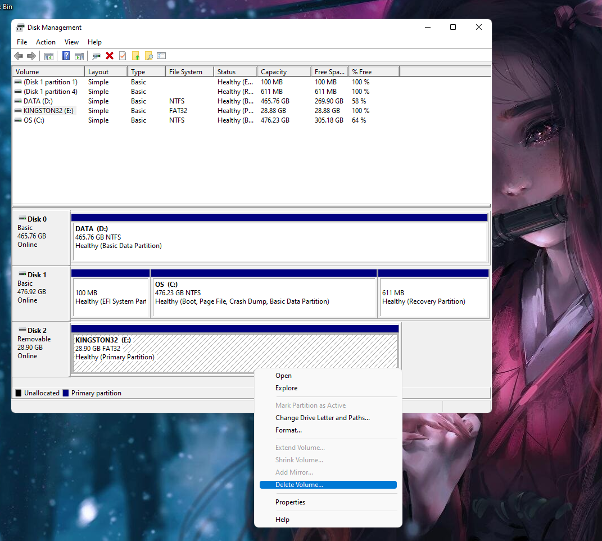

#
There are situations where after using a USB flash drive as a Linux installation media it couldn't be brought back to its original state on a Windows PC.
When one tries to format it using windows GUI/File Manager error like "DIRECTORY DOES NOT EXIST" or something like below pops up when trying to format it using Disk Management...
...so this guide/project is all about guiding the steps to make the USB flash drive back to life
#
Please consider the fact that the screenshots corresponding to steps below are just for reference which may/mayn't reflect same for your pc for example the disk number of flash drive.
All such factors are addressed on respective steps, as well as will be handled via warnings and explanations.
#
Step 1: Start CMD with admin privilege

Step 2:
diskpart

Step 3:
list disk

Step 4: Please make sure that the flash drive is the only one selected and not any system drive
You can deduce the difference between flash drive and system drive by their respective sizes as shown in the size column.
select disk <disk number of flash drive>
Step 5: reassure the selected drive by the "*" asterisk sign before respective Disk ### column
list disk
Step 6:
clean

Step 7 and 8 are only to be followed when you face the same error as seen in the above screenshot, after the clean command from Step 6; else you can skip them to continue from Step 9
Step 7 (Optional):
convert gpt
Step 8 (Optional):
clean
Step 9:
list disk

Step 10:
create partition primary
Step 11:
list partition
Step 12:
select partition <number according to your personal flash drive>
Step 13:
active
Step 14:
format fs=fat32 quick

Step 15:
exit

create and format hard disk partitions


Contributions are what make the open source community such an amazing place to learn, inspire, and create. Any contributions you make are greatly appreciated.
If you have a suggestion that would make this better, please fork the repo and create a pull request. You can also simply open an issue with the tag "enhancement". Don't forget to give the project a star! Thanks again!